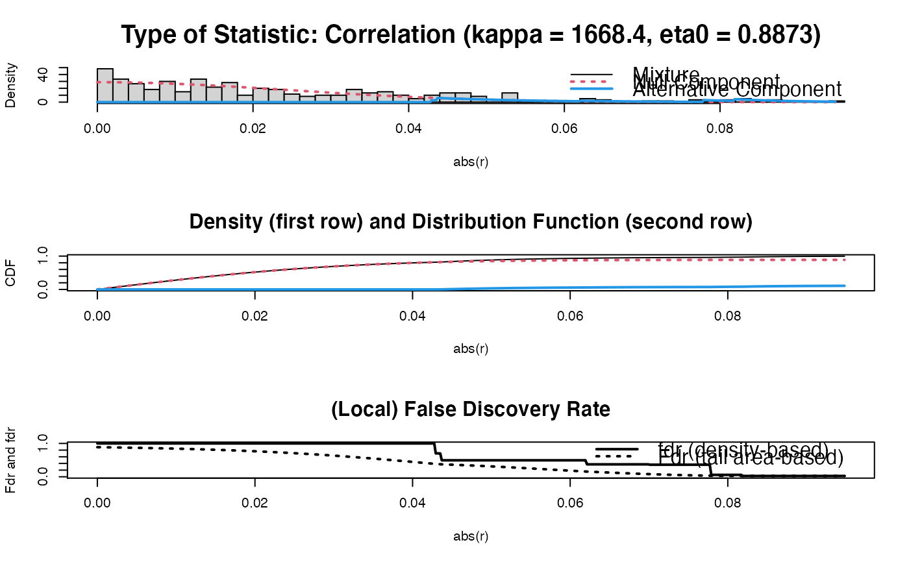

Function that transforms a real matrix into an adjacency matrix. Intended use: Turn sparsified precision matrix into an adjacency matrix for undirected graphical representation.
adjacentMat(M, diag = FALSE)(Possibly sparsified precision) matrix.
A logical indicating if the diagonal elements should be
retained.
Function returns an adjacency matrix.
## Obtain some (high-dimensional) data
p = 25
n = 10
set.seed(333)
X = matrix(rnorm(n*p), nrow = n, ncol = p)
colnames(X)[1:25] = letters[1:25]
Cx <- covML(X)
## Obtain regularized precision matrix
P <- ridgeP(Cx, lambda = 10, type = "Alt")
## Obtain sparsified partial correlation matrix
PC0 <- sparsify(P, threshold = "localFDR", FDRcut = .8)
#> Step 1... determine cutoff point
#> Step 2... estimate parameters of null distribution and eta0
#> Step 3... compute p-values and estimate empirical PDF/CDF
#> Step 4... compute q-values and local fdr
#> Step 5... prepare for plotting

#>
#> - Retained elements: 11
#> - Corresponding to 3.67 % of possible edges
#>
## Obtain adjacency matrix
adjacentMat(PC0$sparsePrecision)
#> A 25 x 25 ridge precision matrix estimate with lambda = 10.000000
#> a b c d e f …
#> a 0 0 1 0 0 0 …
#> b 0 0 0 0 0 0 …
#> c 1 0 0 0 0 0 …
#> d 0 0 0 0 0 0 …
#> e 0 0 0 0 0 0 …
#> f 0 0 0 0 0 0 …
#> … 19 more rows and 19 more columns